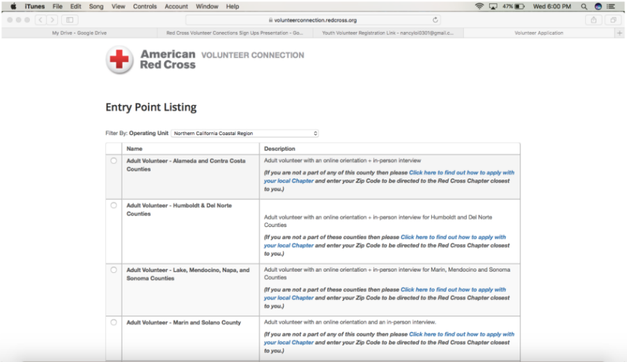

Beginning the Application
- Go to this link: http://tinyurl.com/ARSVCClub.
- Click “Youth Volunteer — Silicon Valley includes Santa Clara county only” and complete online application.

- Fill out the section that says ‘Create a Red Cross ID’ and then it will lead you to a longer application, for which you just need to input all the appropriate information.
- Upon finishing the application described in Step 3, you will be redirected to this checklist. Make sure to complete all of these steps (including all the Parent Forms required) in order to complete your VC registration — if you have any questions about this, feel free to talk to one of the officers!
Checklist (above)
- Read and Agree to Policies and Review and Indicate Opportunities of Interest
- Read the policies of the American Red Cross and indicate that you agree.
- Review the Opportunities of Interest — if you do not know what to put, you can select ‘New Volunteer’ which can be seen after clicking ‘View All’.
- Important Forms
- Print and fill out the Parental Consent and Media Release Form, as well as the Confidential Information and Intellectual Property Agreement (CIIPA) Form. Scan and email the forms to youthservicessvc@redcross.org with your last name, first name, and school in the subject line.
- Chapter staff will check off within 1-2 weeks.
- Updating Profile
- Update your profile with personal information, languages, photo, etc. (Emergency Contact is required)
- Update your profile with personal information, languages, photo, etc. (Emergency Contact is required)
After Making Your Volunteer Connection Account
- Hover over the "My Groups" tab and check if you see "Youth Services SVC: [school name] HS Club 2" AND "Youth Services SVC: All Youth.” If you do not see either group under "My Groups," please email arcsv.vc@gmail.com and request to be added to the missing group(s). Please make sure that you see BOTH groups; if not, you won't be able to sign up for both CLUB and CHAPTER events.
- SIGNING UP FOR EVENTS: After clicking on one of the two groups listed above, click on the "Calendar" tab. Then, click on the event you'd like to attend and RSVP by selecting "Yes" to the question "Will you be attending?" and clicking "Save."
- RECORDING HOURS: Click on the "Home" tab and scroll down to the box labeled “Submit Your Hours" For "Position," select "Clubs SVC: Lynbrook HS Club" for club events or select "Youth Services SVC: Club Member" for chapter events. For "Hours Type," select "Worked." After filling out "Activity," "Hours," "Minutes," and "Date," please click "Submit Hours."

After doing this, you are all done! Explore Volunteer Connection! Keep up with the latest happenings, sign up for events, log hours, and more!
Credits to this pdf by Lynbrook.